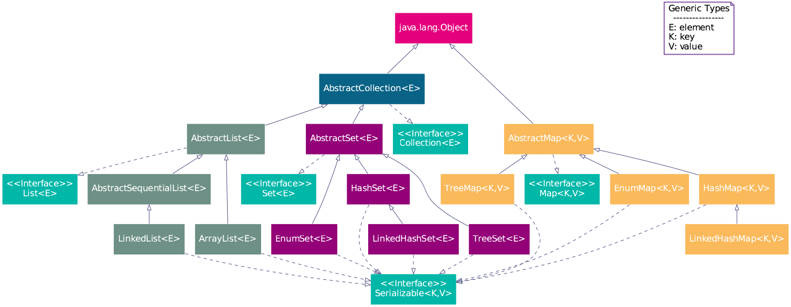

Java 编程语言精粹
Table of Contents
1 JDK
JDK 是 Java 语言的软件开发工具包，主要用于移动设备、嵌入式设备上的 JAVA 应用程 序。JDK 是整个 Java 开发的核心，它包含了 JAVA 的运行环境（JVM+Java 系统类库） 和 JAVA 工具。
1.1 JDK 1.8 新特性
- Java 8 允许我们给接口添加一个非抽象的方法实现，只需要使用 default 关键字即 可。
- 新增 lambda 表达式
- 提供函数式接口
- Java 8 允许你使用关键字来传递方法或者构造函数引用
- 我们可以直接在 lambda 表达式中访问外层的局部变量。
JDK 1.8 的概念图如下：

2 集合
2.1 java.util 包

3 类型
3.1 基本类型
3.2 格式输出字符串
String.format(String fmt, Object... args)的字符串格式和 C 语言的 printf 一样。MessageFormat.format(String fmt, Object... args)使用单引号标记任意字面 量，使用花括号加数字来表示相应的位置的占位符，例如：{0}表示第 1 个位置 的参数，{1}表示第 2 个位置的参数，以此类推。
import java.text.MessageFormat; class App9 { public static void main(String args[]) { String str1 = String.format("Hi, %s", "Jack"); String str2 = MessageFormat.format("Hi, {0}, I''m {1} years old.", "Tom", 18); String str3 = MessageFormat.format("'Hi, {0}, I''m {1} years old.'", "Tom", 18); System.out.println(str1); System.out.println(str2); System.out.println(str3); } }
Hi, Jack
Hi, Tom, I'm 18 years old.
Hi, {0}, I'm {1} years old.